| 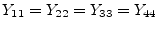 | 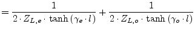 | (9.216) |
| 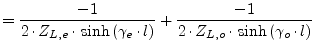 | (9.217) | |
| 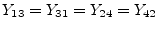 | 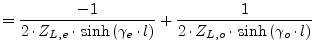 | (9.218) |
| 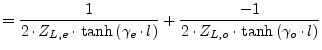 | (9.219) |
A coupled transmission line is described by two identical transmission line ABCD-matrices, one for the even mode (or common mode) and one for the odd mode (or differential mode). Because the coupled lines are a symmetrical 3-line system, the matrices are completely independent of each other. Therefore, its Y-parameters write as follows.
| 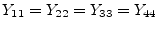 | 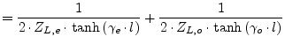 | (9.216) |
| 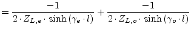 | (9.217) | |
| 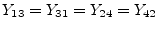 | 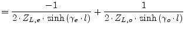 | (9.218) |
| 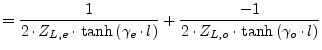 | (9.219) |
The S-parameters (according to the port numbering in fig. 9.12) are as followed [11].
reflection coefficients
| 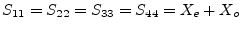 | (9.220) |
| 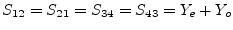 | (9.221) |
| 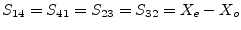 | (9.222) |
| 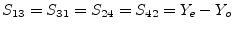 | (9.223) |
with the denominator
| 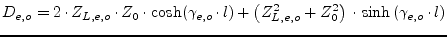 | (9.224) |
and
| 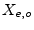 | 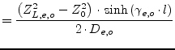 | (9.225) |
| 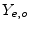 | 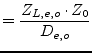 | (9.226) |